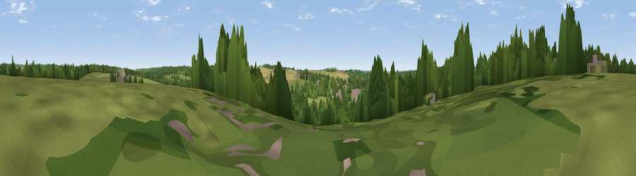

Viewpoint near Whitchurch
#44161 in England · top 90% of its area beats it · near Whitchurch · path 144 mWhere it is
The exact computed spot (SU 46775 48475). Click the marker for map links.
Public access: the nearest public right of way is about 144 m away — the final stretch may cross private land. Computed from Natural England's CRoW access layer and OpenStreetMap rights of way — not the legal definitive map. Always verify locally.
The view, rendered

A 360° render of this exact spot computed from the terrain model, tree cover and land cover — summer colours, afternoon light, calibrated against photographs of famous viewpoints. Real trees, hedges and buildings will differ in detail.
The panorama
Grey silhouette: terrain skyline in each direction (720 bearings, Earth curvature and refraction included). Dashed green: skyline with trees (+15 m) and buildings (+8 m) as obstacles. Blue strip: how far the ground is visible on each bearing.
Where the view opens
Wedge length = distance to the farthest visible ground on that bearing (vegetation-aware). Rings at 10, 25 and 50 km.
What fills the view
37% woodland · 34% grassland · 22% cropland · 7% built-up
Angular shares of the visible panorama (visual magnitude), not map area. Landscape diversity 0.55 (0–1 Shannon).
Key numbers
More beautiful places nearby
The staircase of upgrades: each row has a higher view potential than everything closer. Driving times are estimates from straight-line distance, calibrated against real road routing — check an actual route before setting out.
| Place | Direction | Drive | Score |
|---|---|---|---|
| Viewpoint near Whitchurch | SE · 2 km | ~4 min | 32.8 |
| Knowle Clump | SSE · 2 km | ~5 min | 41.7 |
| Tidbury Rings | S · 6 km | ~12 min | 44.8 |
| Viewpoint near Old Burghclere | NNW · 8 km | ~16 min | 56.7 |
| Ladle Hill | N · 8 km | ~17 min | 70.5 |
| Watership Down | NNE · 9 km | ~17 min | 71.4 |
| Beacon Hill | N · 9 km | ~17 min | 76.7 |
| Martinsell viewpoint | WNW · 33 km | ~50 min | 76.9 |
51.23355, -1.33143 · source: screening · position refined by local search. Computed location — check access rights before visiting.